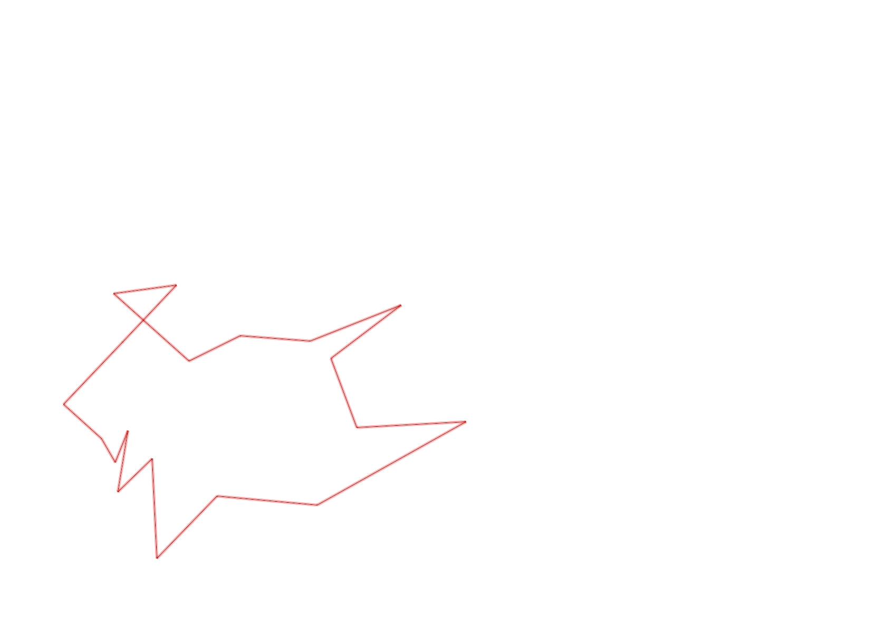
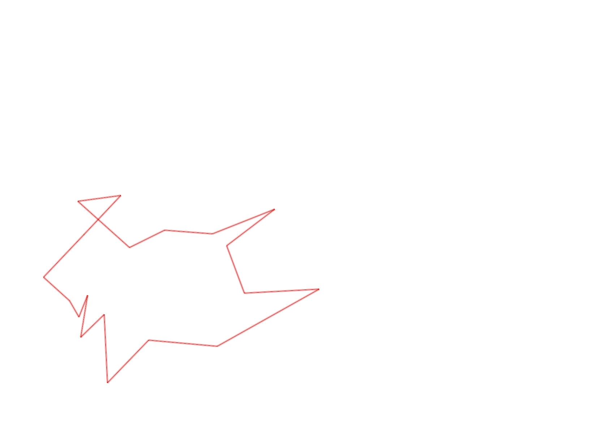

| Control |
Points |
Time Punched |
Distance |
Your Time |
Pace |
Place |
Fastest Time |
Median Time |
% Behind Fastest |
| 126 |
20 |
|
0.17 |
0:00:54 |
05:17 |
6 / 10 |
0:00:43 |
0:00:53 |
25% |
| 130 |
30 |
|
0.14 |
0:00:48 |
05:42 |
16 / 19 |
0:00:00 |
0:00:33 |
-% |
| 32 |
30 |
|
0.24 |
0:01:27 |
06:02 |
1 / 2 |
0:01:27 |
0:03:10 |
0% |
| 63 |
60 |
|
0.15 |
0:01:36 |
10:40 |
15 / 25 |
0:01:05 |
0:01:29 |
47% |
| 44 |
40 |
|
0.19 |
0:01:30 |
07:53 |
1 / 2 |
0:01:30 |
0:02:58 |
0% |
| 53 |
50 |
|
0.2 |
0:04:15 |
21:15 |
24 / 26 |
0:01:31 |
0:02:15 |
180% |
| 69 |
60 |
|
0.12 |
0:01:31 |
12:38 |
20 / 29 |
0:00:45 |
0:01:18 |
102% |
| 71 |
70 |
|
0.06 |
0:01:43 |
28:36 |
19 / 25 |
0:00:48 |
0:01:13 |
114% |
| 54 |
50 |
|
0.08 |
0:00:52 |
10:50 |
21 / 33 |
0:00:27 |
0:00:45 |
92% |
| 40 |
40 |
|
0.15 |
0:02:14 |
14:53 |
2 / 2 |
0:01:01 |
0:01:37 |
119% |
| 41 |
40 |
|
0.11 |
0:02:02 |
18:29 |
19 / 20 |
0:00:28 |
0:01:07 |
335% |
| 77 |
70 |
|
0.24 |
0:04:35 |
19:05 |
1 / 1 |
0:04:35 |
0:04:35 |
0% |
| 59 |
50 |
|
0.21 |
0:03:39 |
17:22 |
16 / 18 |
0:02:00 |
0:02:47 |
82% |
| 61 |
60 |
|
0.24 |
0:04:42 |
19:35 |
18 / 19 |
0:02:14 |
0:03:16 |
110% |
| 37 |
30 |
|
0.4 |
0:07:00 |
17:30 |
6 / 6 |
0:03:20 |
0:04:58 |
110% |
| 42 |
40 |
|
0.26 |
0:08:48 |
33:50 |
6 / 6 |
0:02:08 |
0:03:18 |
312% |
| 127 |
20 |
|
0.17 |
0:02:53 |
16:57 |
11 / 12 |
0:01:27 |
0:01:48 |
98% |
| 92 |
90 |
|
0.21 |
0:06:28 |
30:47 |
5 / 6 |
0:02:15 |
0:04:11 |
187% |
| Finish |
0 |
|
0.23 |
0:02:19 |
10:04 |
3 / 6 |
0:01:41 |
0:05:45 |
37% |
Total Distance Covered: 3.57km
Points Scored: 850
Late Penalty: 0
Final Score: 850
Total Time: 0hours 59minutes 16seconds
Efficiency: 238.1 points/km
 
